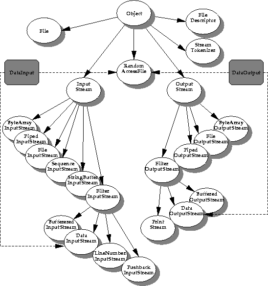

| CONTENTS | PREV | NEXT | The Java Language Environment |
The java.io package contains the declarations of classes to deal with streams and random-access files. This is where you find the rough equivalent of the Standard I/O Library you're familiar with on most UNIX systems. A further library is called java.net, which provides support for sockets, telnet interfaces, and URLs.This picture shows the class hierarchy of the I/O package.

Note that the grayed out boxes with DataInput and DataOutput represent interfaces, not classes. Any new I/O class that subclasses one of the other classes can implement the appropriate interface if it needs to.